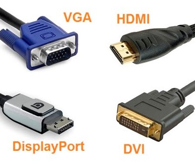

Final preparation before installation once you have your new card.
When you finally get your new card, it's time to install it. Inside the card's box
you will find your new card, and a manual. Some card companies will include a CD with
driver software, but if not, latest drivers are easily found on manufacturers'
websites. Before we start installation, you'll need to take one last check to ensure
basic compatibility. You must have:
A monitor and compatible video display cable to attach it to your card (VGA,
HDMI, DisplayPort, DVI)
Figure 1. Different Types of Video Display Cables

Windows operating system (for MSI cards specifically, check with your
manufacturer to ensure that your operating system is compatible with your card
if using one other than windows)
A motherboard with at least one PCI-E x16 slot available.